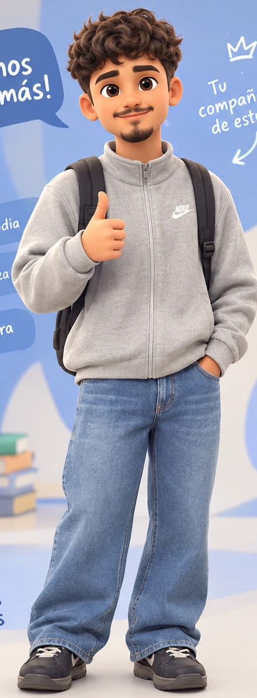

Practica con casos como los del examen, rinde simulaciones con cronómetro y estudia con la ley vigente, artículo por artículo.
¡pequeños pasos, grandes metas!Los casos siguen el formato real: un relato con datos que distraen, preguntas de cuatro alternativas y algunas para justificar.
Civil y Familia, Procesal o Público, organizados según el temario oficial de tu universidad.
Responde, escribe tu justificación y compárala con una respuesta modelo y su pauta.
Rinde la simulación completa con cronómetro y revisa tu nota por caso y por área.
Relatos con distractores y preguntas encadenadas, como en el examen.
20 preguntas intercaladas, cronómetro opcional y corrección al final.
Cinco preguntas nuevas cada día para mantener el ritmo.
Cada cita abre el texto del artículo vigente, con su fecha de versión.
Escribe y compara con una respuesta modelo y sus criterios.
Elige tu personaje y sigue tu progreso día a día.
Los textos legales vienen directamente de la Biblioteca del Congreso Nacional (LeyChile) y se revisan contra la versión vigente. Cuando una ley cambia, los casos que la usan se marcan para revisión.
En los contratos bilaterales va envuelta la condición resolutoria de no cumplirse por uno de los contratantes lo pactado…
Citado en la explicación como 1489 — tócalo y se abre.

¡Vamos por más!Derecho Civil y de Familia, Derecho Procesal y Derecho Público, siguiendo el temario oficial del examen de grado.
Sí: siguen el formato de casos con preguntas de alternativa y preguntas para justificar, con un nivel de dificultad revisado por una estudiante que prepara su examen de grado.
De LeyChile, el servicio oficial de la Biblioteca del Congreso Nacional, en su versión vigente.
No. Funciona desde el navegador del celular o el computador, y puedes agregarla a tu pantalla de inicio como una app.
Estamos en etapa de prueba. Los planes se anunciarán pronto.
Empieza hoy con un caso o con el quiz del día.